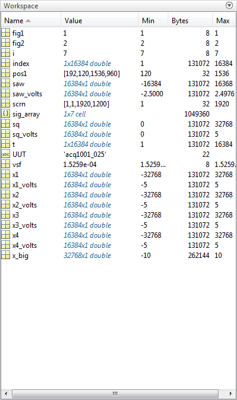
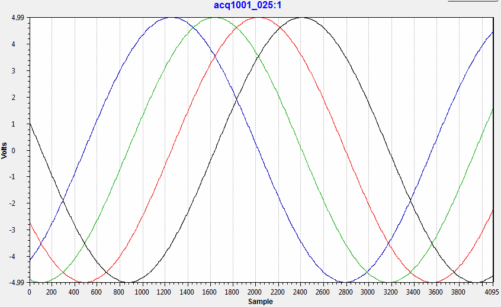

AWG README
This is the readme document for the MATLAB AWG Interface for ACQ400 products from D-TACQ Solutions.
An example run of AWG control is shown before delving into the constituent parts of the application. This detail should allow you to tweak the application or create your own custom interface.
Click on the hyperlinks in this document to go to detailed views of the constituent functions. The most detailed discussion of the interface to the card is given in wavegen.m.
Contents
Example Run
- Execute the initialise_demo script.
>> initialise_demo
- Some plots should appear and you will notice that new workspace variables have been created.

- Next, you should define your UUT (Unit Under Test) as follows.
global UUT % Without DNS UUT = '10.12.196.103'; % IP address of YOUR product, this is just an example. % With DNS UUT = 'acq1001_025';
- From here call the wavegen_go function with arguments
>> wavegen_go(x1,x2,x3,x4)
Readback from UUT stat:/usr/local/awgdata/ch/ch01 length:32768 New ChanDef:16384 stat:/usr/local/awgdata/ch/ch02 length:32768 New ChanDef:16384 stat:/usr/local/awgdata/ch/ch03 length:32768 New ChanDef:16384 stat:/usr/local/awgdata/ch/ch04 length:32768 New ChanDef:16384
- Now through an oscilloscope or acquisition software we can see those generated signals output on the UUT. In this case x1 thru x4 are sine waves offset by 45 degrees.
